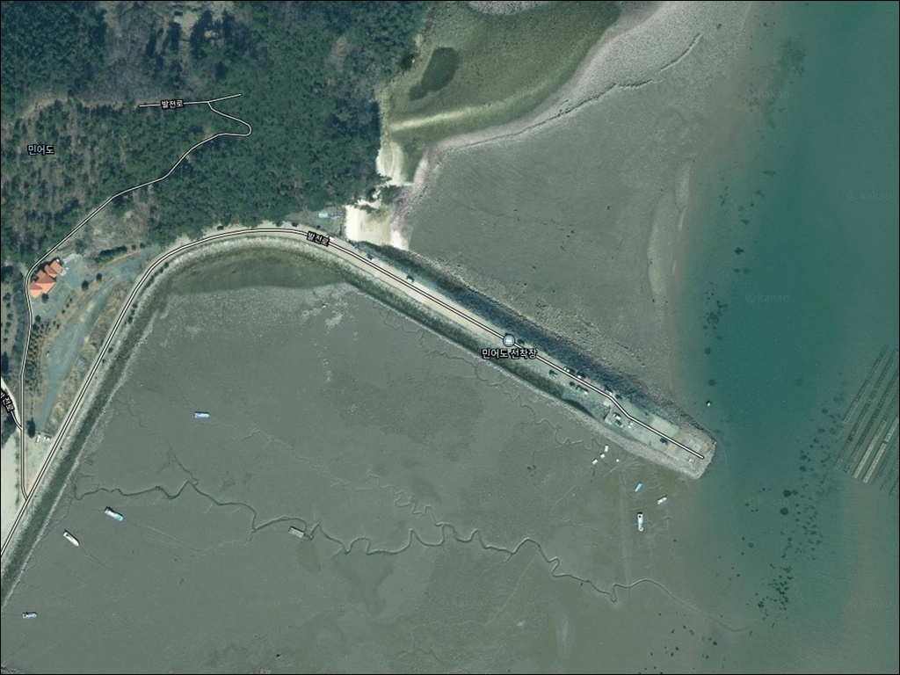
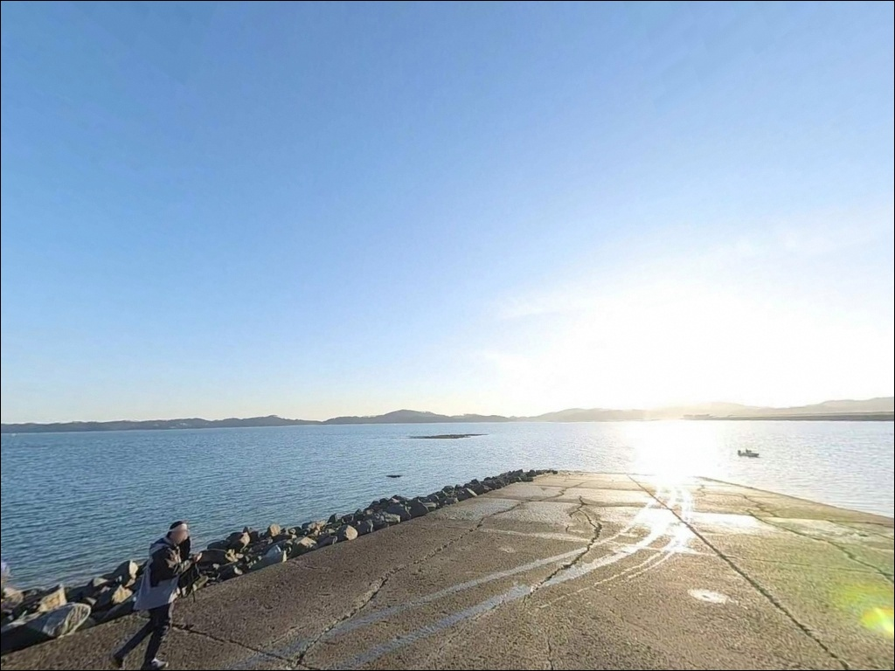
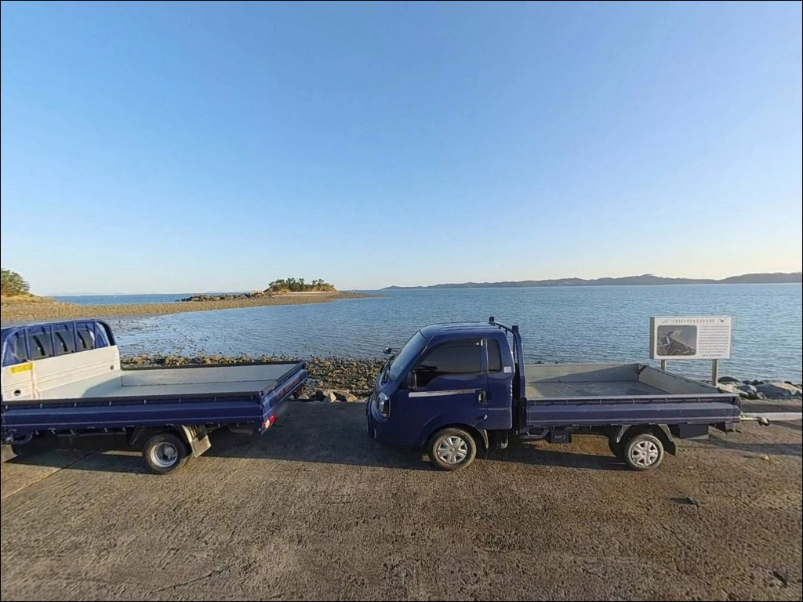
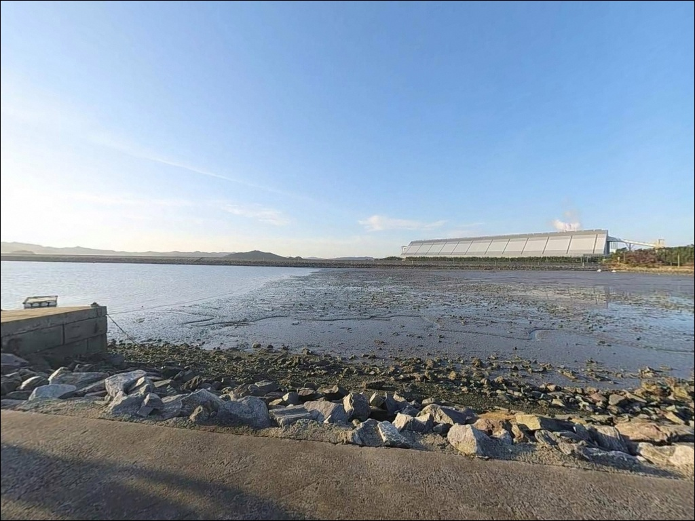
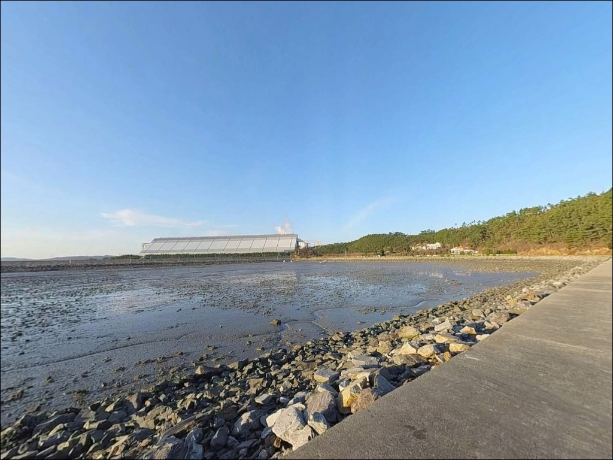
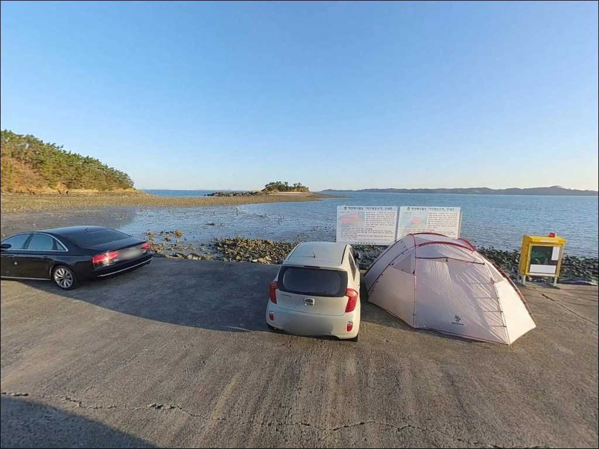
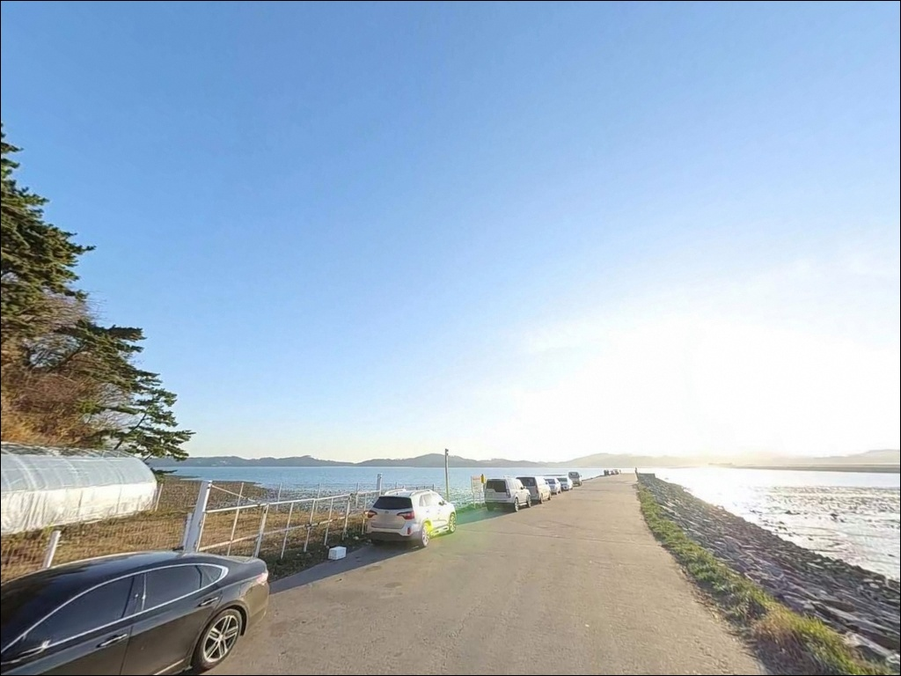
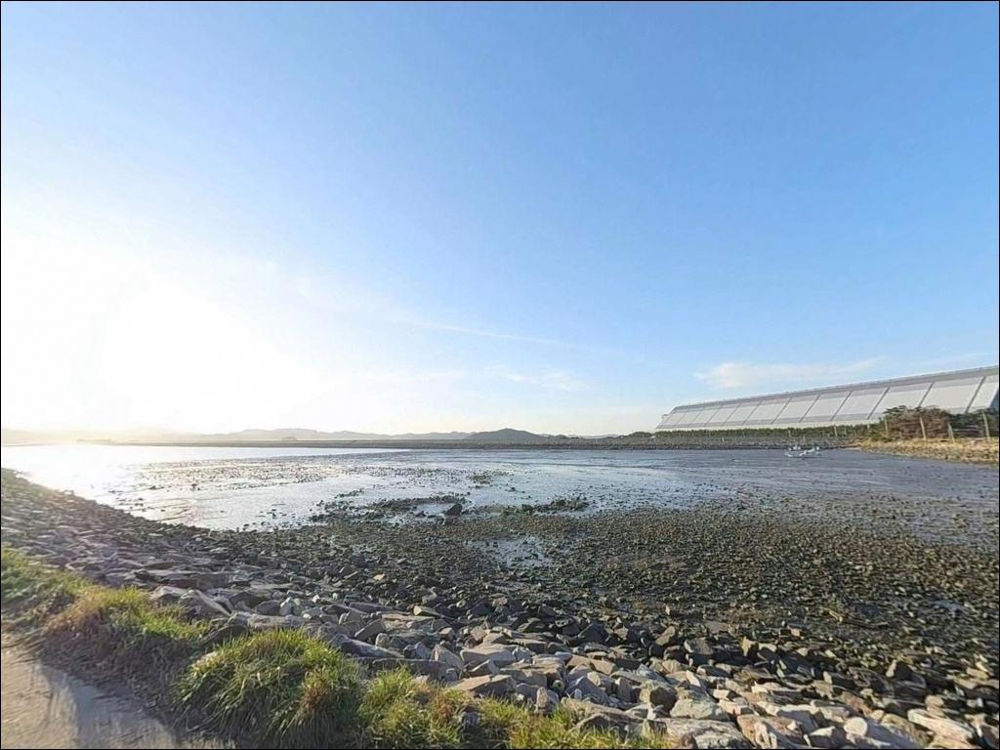
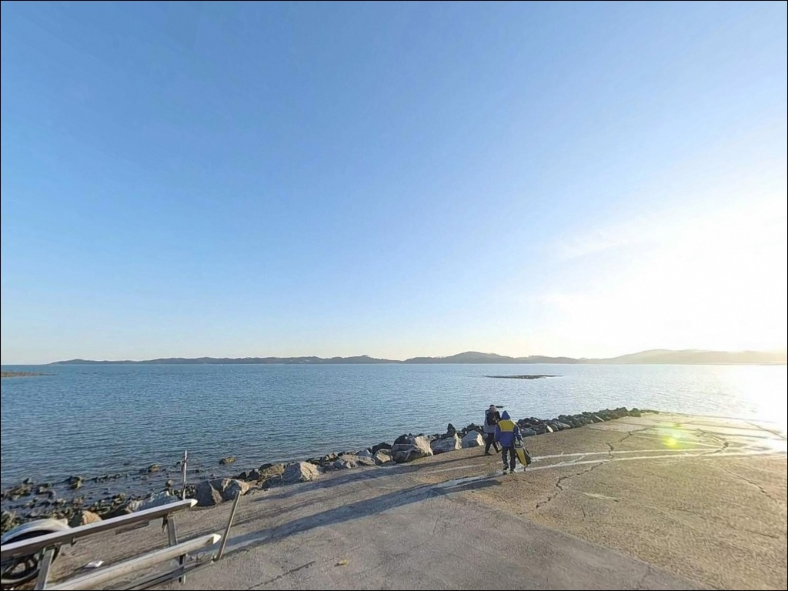

이 페이지에는 광고(제휴 링크 포함)가 있으며, 광고 링크를 통해 구매하면 운영자가 판매 수익 또는 수수료를 받을 수 있습니다. 포인트 사진: 카카오맵 스카이뷰·로드뷰. 이 페이지의 지도·사진 이미지는 카카오맵의 실제 서비스 이미지와 다를 수 있습니다.

민어도 선착장
충남 태안군 원북면 방갈리 10-2
물때 계산 없이 민어도 선착장을 찾으면,
간조 시 갯바위 구간이 대부분 드러나
채비를 넣을 수 있는 공간 자체가 좁아집니다.
서해 조차가 큰 구조에서
만조와 간조의 낚시 여건 차이는
단순한 조과 문제가 아니라
포인트 접근 가능 여부 자체를 가르는 조건입니다.
이 글은 민어도 선착장의 지형 구조와
물때별 진입 조건,
낚시 스타일 판단 기준을 중심으로 정리합니다.
조황 단정이나 특정 어종 보장은
이 글의 범위에 포함되지 않습니다.
충남 태안군 원북면 방갈리,
이원방조제 끝단과 연결된 민어도 선착장은
본래 섬이었던 지형이 방조제로 육지와 이어지면서
차량 진입이 가능해진 포인트입니다.
방파제와 갯바위, 선착장이 어우러진 복합 구조로
원투·루어·찌낚시를 폭넓게 시도해볼 수 있으며,
인근 태안화력발전소의 온수 영향으로
주변 수온이 다소 높게 유지되는 경향이 있어
늦가을까지도 어종 활성도가 이어지는 포인트로
알려진 편입니다.

이원방조제를 따라 진입하는 구조로,
도로 접근성 자체는 나쁘지 않습니다.
네비게이션 기준으로 태안화력발전소 부근을
경유하는 경로가 안내되는데,
처음 방문 시 방향이 어색하게 느껴질 수 있으나
계속 따라가면 선착장에 닿는 구조입니다.
진입 구간에 폭이 좁은 샛길 구간이 있을 수 있어,
대형 캠핑카나 카라반이라면
출발 전 경로를 한 번 더 확인해두는 편이 안전합니다.
선착장 인근에는 공터 형태의 주차 공간이 있으며,
방조제 갓길도 주차 후보지로 활용됩니다.
주말이나 성수기에는 이른 시간부터
차량이 모이는 편이어서,
방조제 초입 쪽에서부터 자리를 잡아야
하는 경우도 있습니다.
회차는 선착장 주변 공터에서
소형~중형 차량 기준으로 가능한 편이며,
대형 차량이라면 회차 여건을 미리 파악해두는 것이 낫습니다.

민가 밀집도가 낮은 포인트로,
야간에는 차량 통행이 적고 조용한 편입니다.
방조제 갓길이나 선착장 인근 공터를 활용한
차박 방문자가 많은 곳으로 알려진 편이며,
주변이 트인 해안 구조라
프라이버시는 비교적 확보됩니다.
단, 야간 조명이 제한적이어서
개인 랜턴이나 헤드랜턴은 반드시 준비해야 합니다.
발전소 인접 지점 특성상
야간에도 산업용 조명이 일부 영향을
줄 가능성이 있습니다.
외해 쪽으로 노출되는 구조여서
바람 방향과 세기에 따라
체류 여건이 달라지는 편입니다.
차박을 메인 목적으로 삼는다면
당일 기상 예보와 풍향을 미리 확인하고
진입 여부를 판단하는 것이 기본입니다.

민어도 선착장 현장에는 화장실이 없습니다.
편의점이나 식당도 선착장 인근에서
기대하기 어렵습니다.
식수, 얼음, 낚시 소품, 연료는
출발 전 모두 갖추고 진입하는 것이
기본 전제입니다.
완전 자급 체제로 진입하는 것이
이 포인트를 즐기는 현실적인 방식입니다.
반경 10km권으로 이동하면
원북농협하나로마트(충남 태안군 원북면 상리길 5,
영업시간 08:00~21:00)를 이용할 수 있습니다.
이 동선이 가장 가까운 보급 거점입니다.
학암포해수욕장 방향으로도
음식점과 편의시설이 갖춰진 상권이 형성되어 있어,
부족한 물품이 있다면 이쪽 동선을
활용하면 됩니다.

물때 확인이 먼저입니다.
서해는 조차가 크고, 민어도 선착장은
그 영향을 직접 받는 구조입니다.
바다타임에서 이원항 기준 물때를 확인하고,
만조 전후 2~3시간 구간에
낚시가 집중될 수 있도록
출발 시간을 맞추는 것이
이 포인트 공략의 기본 전략입니다.
갯바위 구간 진입 계획이 있다면
고립 사고에 각별히 주의해야 합니다.
민어도 본섬은 간조 시에만 갯벌 길이 열리고,
만조 시에는 진입 경로가 물에 잠기는 구조입니다.
귀환 타이밍을 반드시 물때와 함께 계산해두고,
만조 예정 시각보다 충분히 일찍
복귀 동선을 잡아두는 것이
이 포인트에서 가장 중요한 안전 판단입니다.
구명조끼 착용과 야간 헤드랜턴 지참은 기본입니다.
선착장 캐스팅 시
오른쪽 해역은 어촌계 관리 구역입니다.
낚싯줄이 해당 방향으로 넘어가지 않도록
자리를 잡아야 합니다.
선착장 전면의 양식장 구역도
투척 방향에서 미리 파악해두면
불필요한 마찰을 피할 수 있습니다.

민어도 선착장은 방파제·선착장·갯바위가
한 해안선에 이어지는 복합 구조입니다.
방파제 외항 방향은 개방형 수면으로
조류 흐름이 살아 있고,
선착장 끝단 쪽은 수심이 비교적 빠르게
깊어지는 구간입니다.
방파제 외항 끝단은 수심이 빠르게 깊어져
원투와 루어 모두 기대할 수 있는 자리입니다.
갯바위와 간출여 주변에는
홈통 구간이 형성되는 편이며,
조류가 흐르는 시간대에
루어 반응이 올라오는 구조입니다.
단, 간조 시 해조류가 노출되면
발판이 미끄러운 곳이 생기므로
이동 동선을 미리 파악해두는 것이
안전과 직결됩니다.
선착장 내측 석축 구간은
우럭·숭어류가 붙기 좋은 지형 조건을
갖추고 있습니다.
이 포인트에서 기대해볼 수 있는 어종은
우럭, 노래미, 광어, 농어, 붕장어, 숭어입니다.
인근 발전소 온수 영향으로
수온이 타 서해 지점보다 높게 유지되는
경향이 있어,
늦가을까지도 어종 활성도가 이어지는 날이
있는 편입니다.
가기 전에 최신 조황은 꼭 검색해 보시기 바랍니다.
검색 키워드: 민어도 낚시 조황 / 이원방조제 낚시 / 태안 원북 조황

원투낚시는 방파제 외항 방향 캐스팅이
가장 기본적인 공략 방식입니다.
수심이 일정 구간 이상으로 깊어지는 끝단에서
붕장어, 광어를 바닥 중심으로 노릴 수 있습니다.
차를 주차한 뒤 바로 캐스팅이 가능한 위치여서
진입 편의성이 높은 편입니다.
원투낚시란 무거운 봉돌을 달아 채비를 멀리 투척하여
바닥층 어종을 공략하는 방식입니다.
찌낚시는 선착장 석축 내측 구간이
잘 맞는 자리입니다.
우럭이나 숭어가 석축 주변에 붙어 있는 경우가 많고,
조류가 안정되는 시간대에
안정적인 탐색이 가능합니다.
채비 손실 부담이 적어
생활낚시 방식으로도 어울리는 구간입니다.
갯바위 루어낚시는 만조 전후
갯바위 구간이 활성화될 때
농어나 광어를 노리는 방식으로
공략해볼 수 있습니다.
미노우나 지그헤드 채비로
홈통 구간과 암초 경계를 탐색하는 방식이
이 포인트 지형에 잘 맞습니다.
조류가 강한 시간대는
채비 컨트롤이 어려울 수 있으므로
정조 전후를 기준 시간대로 잡는 것이 좋습니다.
외항 방향의 개방된 수면에서는
삼치나 농어가 회유하는 시즌에
메탈 지그를 멀리 보내는 방식도
시도해볼 만합니다.
이원방조제 수문 쪽은 물때에 덜 구애받는
구조여서,
입질이 없을 때 가까운 대안 자리로
활용할 수 있습니다.

민어도 선착장이 여건이 여의치 않다면
같은 이원방조제 라인에서 바로 이동할 수 있습니다.
이원방조제 중간 수문 쪽은
수문 앞 구간이 물때 영향을 덜 받는 구조로,
방조제 양측에서 원투나 루어 모두
시도할 수 있는 포인트입니다.
이동 거리가 짧아 플랜 B 동선으로
바로 활용 가능합니다.
반경 5~6km권에 학암포항이 있습니다.
방파제 구조가 명확하고 진입 여건이 안정적인
정식 어항으로,
화장실과 편의시설도 이용할 수 있습니다.
이원항 기준 물때를 확인하지 않은 민어도 방문은
헛걸음으로 이어질 가능성이 큰 포인트이므로,
기상이나 물때가 맞지 않는 상황이라면
학암포항으로 이동하는 것이
실용적인 선택입니다.
차박을 병행하는 경우라면
구례포해수욕장 인근이 대안이 됩니다.
주차 공간과 기반 인프라가 민어도보다
나은 편이어서,
편의시설 접근이 중요한 동행이 있을 때는
이쪽을 먼저 고려하는 것도 방법입니다.

원투낚시, 루어낚시, 찌낚시를
한 자리에서 고루 시도하고 싶은 낚시인에게
민어도 선착장은 지형 다양성 면에서
잘 맞는 구조입니다.
방파제, 선착장, 갯바위가 이어진 복합 포인트라
자리와 방식을 바꿔가며 탐색할 수 있고,
발전소 온수 영향으로 늦가을까지
어종 활성도가 이어지는 경향이 있어
시즌 폭이 다른 서해 포인트보다 넉넉한 편입니다.
반면 물때 준비 없이 찾아가거나
편의시설을 기대하고 가는 경우라면
포인트를 제대로 활용하기 어렵습니다.
완전한 자급 체제, 물때 사전 확인,
갯바위 진입 시 고립 위험 인지,
이 세 가지를 갖춰야
이 포인트의 가능성을 온전히 꺼낼 수 있습니다.
조용한 서해 선착장에서 낚시를 마치고
하룻밤 머무는 차박 여행이라면,
물때와 기상을 충분히 준비한 뒤 찾는 것이
민어도 선착장을 오래 기억에 남기는 방법입니다.